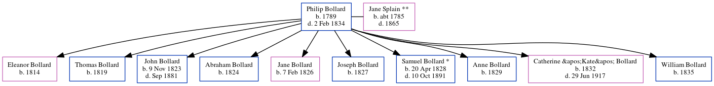

Philip Bollard 1789 - 1834
[ Home ] | [ Calendar ] | [ Surnames Index ] | [ Census Index ] | [ Family History ]Philip Bollard, the 4 times great-grandfather of Michele Copp (née Phillips), was born in Ireland in 1789 and married Jane Splain ** (with whom he had 10 children: Eleanor, Thomas, John, Abraham, Jane, Joseph, Samuel *, Anne, Catherine "Kate" and William) in Wicklow, Ireland on Oct 27, 1813.
He died on Feb 2, 1834 in Meath, Ireland.
Children
- Eleanor was born in 1814
- Thomas was born in 1819
- John was born on Nov 9, 1823
- Abraham was born in 1824
- Jane was born on Feb 7, 1826
- Joseph was born in 1827
- Samuel * was born on Apr 20, 1828
- Anne was born in 1829
- Catherine "Kate" was born in 1832
- William was born in 1835
Family Tree
Generated by ged2site. Last updated on Jun 6, 2024